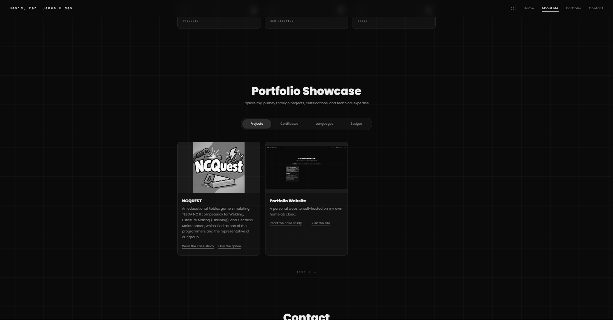

ABOUT
Portfolio Website
A personal portfolio I designed and coded myself to show my projects, certifications and skills in one place. The public site runs on GitHub Pages, and I also run a copy on my home lab server: a spare PC I turned into an Ubuntu Server machine running Nginx.
- Role
- Solo project: design, code and hosting
- Timeline
- September 2026 – Present
- Built with
- HTML, CSS, JavaScript, GitHub Pages, Ubuntu Server, Nginx
- Status
- Live on GitHub Pages
What I built
A one-page portfolio with an About section, a Portfolio Showcase with tabs for my projects, certificates, badges and skills, a contact form, and a case study page for each project.
- Design — A clean layout with large headlines and a light and dark mode switch, built to work on both phones and computers.
- Front end — HTML for the structure, CSS for the layout and styling, and JavaScript for the tabs, scroll animations, image preview and theme switch.
- Hosting — The public site runs on GitHub Pages. A copy also runs on my home lab server with Nginx, where I practise managing a web server.
How it was built
I wrote it by hand in VS Code with HTML, CSS and JavaScript, without a framework. I first ran it on my home lab server (Ubuntu Server and Nginx), then published it on GitHub Pages so anyone can open it with a link.